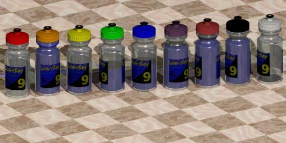

|
|  |
| POV-Ray |
| week | date | climb | coordinator | volunteers |
|---|---|---|---|---|
Brenda Brunner Luke Burton Juliana Chen Tim Clark Cara Coburn Dan Connelly Calvin Do Christine Holmes Howard Kveck Pat Parseghian | ||||
Bill Bushnell Cara Coburn Dan Connelly Josh Hadley Martin Hyland Howard Kveck Greg McQuaid Eric Murray Pat Parseghian Chris Phipps Wojtek Poppe Dick Robinson Doug Simpkinson Tim Sutton Dan Talayco Eric Weigle | ||||
Bill Bushnell Cara Coburn Dan Connelly Josh Hadley Howard Kveck Winnie Lam Pete Petroski Dick Robinson Mei Xi | ||||
Cara Coburn Rune Dahl Sharlene Gee Gary Griffin Josh Hadley Rich Hill Christine Holmes Chris Phipps Rikke Preisler | ||||
Bruce Gardner Howard Kveck Laura Lemay Eric Murray Eric Sorenson Colin Sturdivant Michelle Vaccaro Melissa Vaccaro Joey Wu | ||||
Michael Barnes Brenda Brunner Bill Bushnell Stephen Chapel Phil Dubach Stephen Fong Clark Foy Christine Holmes Howard Kveck Justin Lucke Ingrid McCarty Pat Parseghian James Porter Peter Tapscott Adam Tow | ||||
Brenda Brunner Bill Bushnell Carl Butler Dan Connelly Richard Contreras Howard Kveck Garrett Lau Lucia Mokres James Porter | ||||
Lori Fabris Ryan Gibson Christine Holmes Martin Hyland Howard Kveck Ingrid McCarty Pat Parseghian Nils Tikkanen David Vrane | ||||
Michael Barnes Bill Davis Mrs. Gibson Michael Grundmann Josh Hadley Martin Hyland Howard Kveck Carl Nielson Pat Parseghian Eric Sorenson Adam Tow Kevin Winterfield Mrs. Gibson's father |
{kind=link}